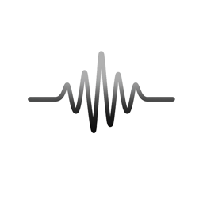

Low
End
Development
Building at 174 strokes per minute
Apps

Whispered
Live-Transkription & Sprechererkennung – vollständig auf dem iPhone. Keine Cloud, kein Konto, kein Abo.
Component Scan
Web-App · Erkennt Widerstände und Spulen per Farbring und rechnet Kondensator- und SMD-Codes.
Missing Link
Web-App · Konfigurator für VKB RevC → VPforce Rhino, direkt im Browser.
Whispered
Support
Impressum
Datenschutz